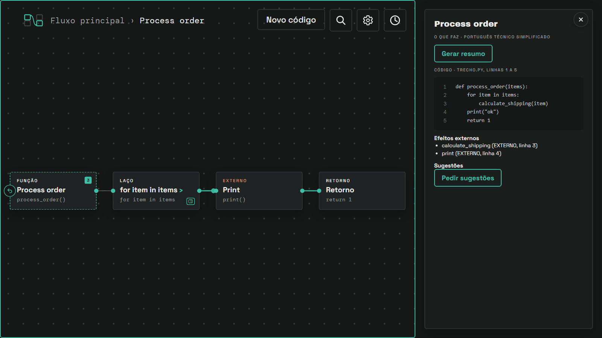
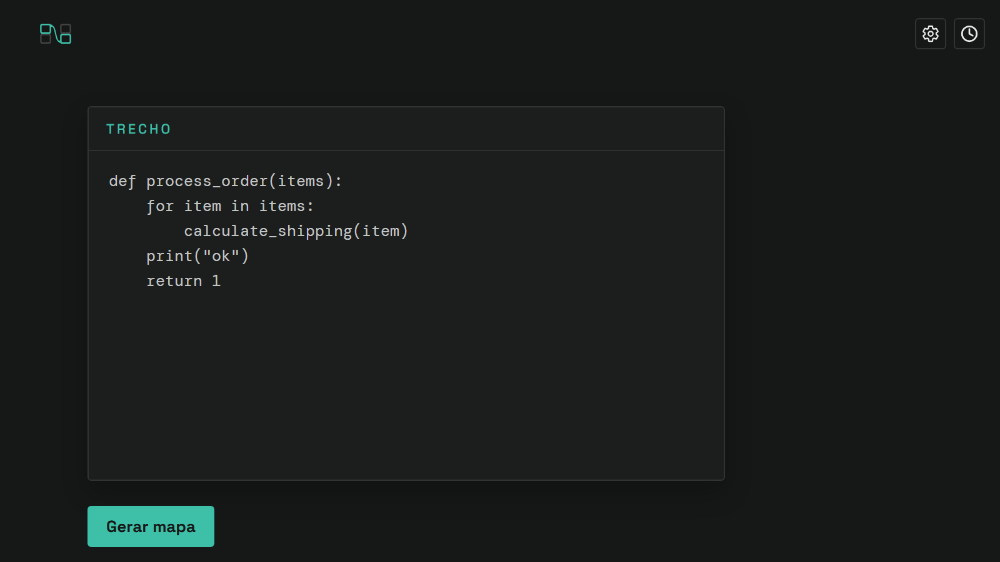
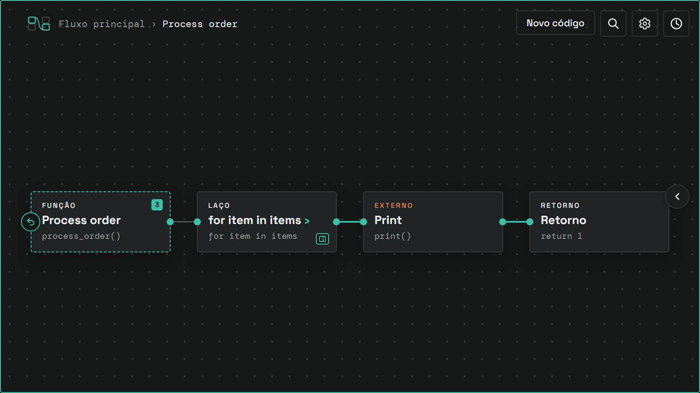
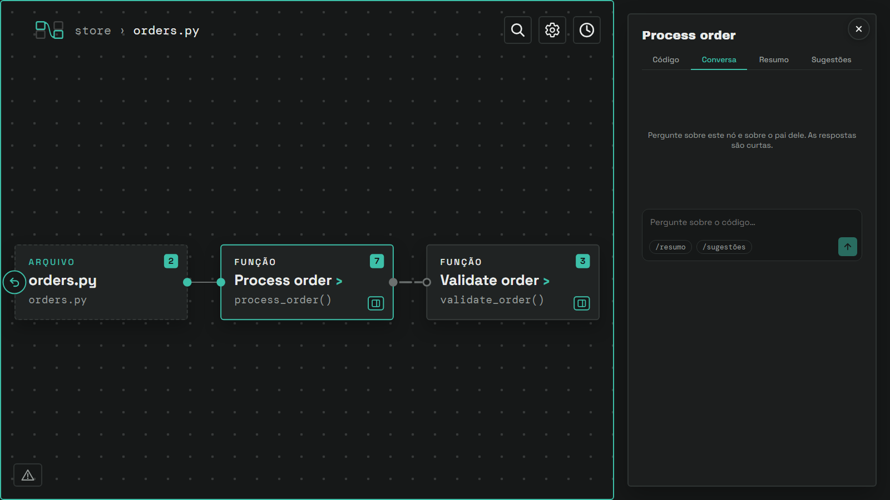
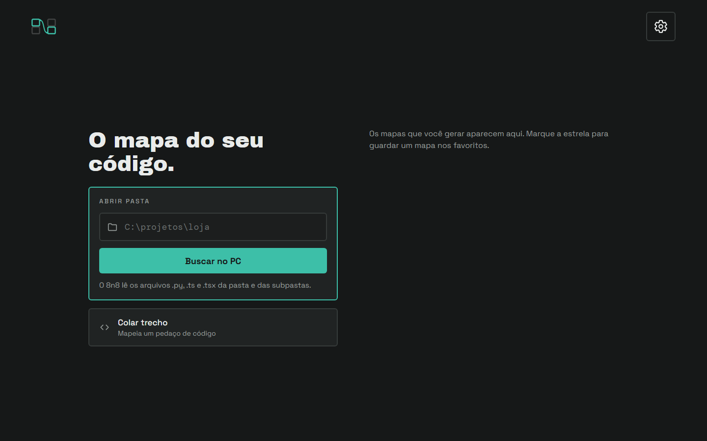

Guia visual do 8n8
O que cada peça da tela é, o que ela significa e de onde ela vem. O guia serve a quem estuda o sistema, a quem mexe no desenho e a quem lê um mapa.
O manual da marca mostra como cada peça é desenhada e medida. Este guia explica o que cada peça quer dizer. Onde os dois divergem, vale o código.
- Vocabulário
- A tela
- O cartão
- Os tipos de nó
- Cores
- A forma do cartão
- Arestas: a regra
- A etiqueta da aresta
- Direção
- As nove arestas
- Casos especiais
- O nível de fora
- Onde cada aresta aparece
- O que não vira linha
- Uma tela, lida
- O painel
- Outras peças
- Teclado e mouse
- CLI, VS Code e app instalado
- De onde vem
- Onde o desenho vive
Vocabulário
Cada termo tem um só sentido neste documento.
- nó
- Um cartão. Representa uma pasta, um arquivo, uma função, uma classe, um passo de código ou uma chamada.
- aresta
- A linha entre dois nós. Diz que existe uma relação entre eles.
- origem, destino
- O nó de onde a aresta sai e o nó onde ela entra. Quem chama e quem é chamado, quem importa e quem é importado, quem herda e quem é herdado.
- porta
- O círculo na borda do cartão onde uma aresta toca. Só aparece onde há aresta.
- nível
- Uma tela do mapa. O nível de fora mostra o trecho ou a pasta inteira. Abrir um nó mostra o nível de dentro dele.
- hub
- O nó aberto. Aparece à esquerda do seu nível, com borda tracejada, ligado aos filhos por linhas de "contém". No topo de um mapa de pasta, o hub é a própria pasta: ele não tem botão de voltar, e o clique nele não faz nada.
- entrada
- Um nó do nível de fora que ninguém chama: uma função que inicia um fluxo, ou o código solto do arquivo. A entrada não tem tag própria. Ela é uma FUNÇÃO ou um CÓDIGO SOLTO, e se reconhece por não receber linha de chamada.
- passo
- Uma linha de código que virou nó dentro de uma função: chamada, condição, laço, bloco, código ou retorno.
- tag
- A palavra em caixa alta no topo do cartão: FUNÇÃO, SE, PASTA. Diz o tipo do nó.
- título
- O nome em negrito do cartão. Vem de uma frase curta revisada, ou do nome técnico enquanto não há revisão.
- linha de código
- A linha em fonte mono, sob o título. É o nome técnico ou a primeira linha do nó.
- contagem
- O retângulo verde com um número. Diz quantos nós o nível de dentro mostra. Só pastas, arquivos, funções, classes e código solto têm contagem.
- selo de sugestões
- O retângulo na cor do texto (Névoa no escuro, Tinta no claro) com um ponto e um número. Diz quantas sugestões caem dentro do nó. Um clique abre o balão.
- botão de ver detalhes
- O botão com o ícone de painel, no canto inferior direito dos nós que abrem, menos as pastas. Mostra o painel do nó sem entrar nele.
- painel
- A coluna à direita com o detalhe do nó selecionado. Mostra uma parte por vez, em quatro abas.
- aba
- Uma das quatro partes do painel: Código, Conversa, Resumo e Sugestões. A aba escolhida fica quando você troca de nó.
- conversa
- A aba onde você pergunta sobre o nó aberto e sobre o pai dele. As respostas são curtas.
- sugestão guardada
- Uma sugestão que veio da conversa e ficou na lista do nó, sob "Da conversa". O modelo guarda sozinho a que achar, e você guarda qualquer resposta com o ícone de marcador.
- balão
- A janela pequena que abre sobre o selo de sugestões e lista cada sugestão.
A tela do mapa
O mapa de uma pasta, com o arquivo orders.py aberto e o painel de um nó à direita. Cada número abaixo aponta uma peça.

A imagem é uma captura do app real, gerada por pnpm prints. Ela muda junto com a tela. A pasta de exemplo ganhou um arquivo de mais de 1 MB, para o botão 10 aparecer.
- 1Logotipo. Quatro blocos, dois deles ligados por uma aresta com duas portas. No mapa e no editor, é um botão que leva à tela inicial. Na tela inicial, é só a marca.
- 2Trilha. O caminho até o nível aberto. Num mapa de pasta, o primeiro item é o nome da pasta. Num trecho, é "Fluxo principal". Cada item volta àquele nível. O último é o nível aberto, não encolhe e, ao clicar, mostra o painel do nó aberto, se ele não for uma pasta.
- 3Busca. A lupa. Ao clicar, vira um campo. Procura por título ou nome técnico em todos os níveis, e leva ao nó escolhido (capítulo Outras peças).
- 4Configurações. A engrenagem. Abre o diálogo de provedor, chave, modelo, resumo e sugestão automáticos, tema e idioma.
- 5Histórico. O relógio. Abre a gaveta com os mapas já gerados e os favoritos.
- 6Canvas. O fundo com grade de pontos. Todo nó e toda aresta vivem aqui. Num nível de dentro, o canvas ganha uma borda verde.
- 7Hub. O nó aberto, com borda tracejada, a contagem de nós do nível e o botão de voltar à esquerda.
- 8Nó. Um cartão do nível. Este está selecionado: borda verde, e o painel mostra o detalhe dele. O capítulo O cartão explica cada parte.
- 9Aresta. A linha entre dois nós. Aqui, uma chamada dentro do mesmo arquivo: cinza, com extremo cheio na origem e anel no destino. Os capítulos de arestas explicam cada tipo.
- 10Arquivos ignorados. Um triângulo de aviso no canto inferior esquerdo, só num mapa de pasta e só quando o 8n8 pulou algum arquivo. O texto "1 arquivo ignorado" aparece ao passar o mouse.
- 11Barra do painel. A faixa entre o canvas e o painel. Arraste, ou use as setas com ela em foco, para mudar a largura do painel.
- 12Minimizar painel. O X no canto do painel. Com o painel minimizado, vira um círculo com ‹ na borda direita, que o abre de novo.
- 13Painel de detalhe. O nome do nó e, sob ele, uma parte por vez. Aqui está a aba Código, com as linhas do nó. O capítulo O painel explica cada aba e cada estado.
- 14Abas do painel. Código, Conversa, Resumo e Sugestões, nesta ordem. A aba aberta tem sublinhado e texto em Petróleo. O painel abre no Código.
A contagem de nós vive nos cartões, e não há rodapé no mapa. A linguagem de um trecho aparece no cabeçalho do código, no painel (CÓDIGO · trecho.py, linhas 1 a 5).
O mapa de um trecho colado
Um trecho colado abre num editor. O botão "Gerar mapa" desenha o mapa. O mapa de um trecho tem a mesma tela do mapa de pasta, com duas diferenças: a trilha começa em "Fluxo principal", e a barra ganha o botão Novo código antes da lupa.


- NNovo código. Só existe no mapa de um trecho. Num mapa de pasta, ele não aparece. Volta ao editor com o texto mantido, para mudar o código e gerar o mapa de novo.
O editor não tem busca: ainda não há nós para buscar. Ele tem o logotipo, as Configurações e o Histórico.
O cartão, peça por peça
O cartão mede 320 por 140 pixels. Todo nó usa o mesmo cartão. O que muda de um nó para outro é a tag, o texto e as marcas abaixo.
- ATag. O tipo do nó, em caixa alta. A cor agrupa os tipos em famílias (capítulo Cores).
- BTítulo. O nome do nó em negrito. Vem de uma frase curta revisada ou, sem ela, do nome técnico.
- CMarca de abrir (›). Aparece depois do título quando um clique abre o fluxo de dentro do nó. Um nó só abre se tiver algo dentro, e uma chamada só abre se a função chamada estiver no código. Sem a marca, o clique só seleciona.
- DLinha de código. Fonte mono. É o nome técnico (
calcular_frete()), o caminho de uma pasta (services/) ou de um arquivo, ou a primeira linha do nó, sem a docstring. Passa de 32 caracteres e corta com "…". - EContagem. O retângulo verde com número. É quantos nós o nível de dentro mostra. Aparece em pastas, arquivos, funções, classes e código solto, nos cartões e no hub. Laço, bloco e chamada abrem, mas não têm contagem. O número 3 quer dizer que, ao abrir, você vê três nós.
- FSelo de sugestões. O retângulo na cor do texto (Névoa no escuro, Tinta no claro) com um ponto e um número. É quantas sugestões caem dentro do nó. Cada sugestão vem da LLM, presa a uma linha do código, e vai para o menor cartão visível que contém essa linha. Uma sugestão sem cartão vai para o hub. O selo só aparece depois que as sugestões foram pedidas, no painel ou no modo automático. Um clique abre o balão.
- GPorta. O círculo na borda. A aresta sai ou entra por ele. Só aparece onde há aresta. Numa aresta de dependência a porta de origem é um círculo cheio e a de destino é um anel oco.
- HBotão de voltar. O círculo com seta curva, só no hub de um nível de dentro. Volta um nível, como a tecla Esc.
- IBotão de ver detalhes. O retângulo com o ícone de painel, no canto inferior direito. Aparece nos nós que abrem, menos nas pastas: uma pasta não tem painel. Mostra o painel do nó sem entrar nele. Num arquivo, ele serve para ver o que o arquivo faz sem abrir as funções dele: o painel mostra o código e os botões de resumo e de sugestões. O clique no cartão continua entrando. O hub não tem o botão.
Estados do cartão
| Estado | Como se vê | O que significa |
|---|---|---|
| normal | Borda cinza, 2 px. | Nó do nível, sem seleção. |
| selecionado | Borda verde. | O painel mostra o detalhe deste nó. O nó com o balão de sugestões aberto também fica assim. |
| hub | Borda tracejada, botão de voltar. | É o nó que você abriu. Os outros cartões do nível são os filhos dele. Um clique no hub mostra o painel dele, se ele não for uma pasta. |
| com contagem | Retângulo verde no canto. | Pasta, arquivo, função, classe ou código solto que abre. O número diz quantos nós há dentro. |
| com selo | Retângulo na cor do texto ao lado da contagem. | Há sugestões em linhas deste nó. |
| erro de sintaxe | Texto verde sob o cartão: "Erro de sintaxe na linha 4". | O parser achou código inválido. O nó continua no mapa e ganha uma linha própria no nível de fora. Um código solto com erro aparece mesmo sem chamada. |
| arrastado | O cartão sai do lugar do layout. | Você arrastou o cartão. A posição vale enquanto o mapa está aberto, e as arestas trocam de porta para seguir o cartão. |
Cores
A marca tem poucas cores. Cada uma cumpre papéis fixos. O manual veta cores fora da paleta e limita o Petróleo a 5% de uma tela.
A paleta
| Nome | No código | Escuro | Claro | Papel geral |
|---|---|---|---|---|
| Petróleo | --main | #3dbfa8 | #0f7a6b | O que liga, o que está em foco, a estrutura do projeto e a ação principal. |
| Névoa / Tinta | --second | #e9ebea | #12292a | Texto principal e o código que roda. |
| Pedra | --accent | #979d9b | #5b6d6a | Texto de apoio. |
| Dim | --dim | #6b706f | #8f9a98 | O que fica dentro de um arquivo ou quase não importa: dependências internas, linhas de "contém", números de linha. |
| Cobre | --warm | #dc8a5c | #a34f26 | Atenção. O que sai do código e os avisos. |
| Perigo | --danger | #e0735c | #b2452f | Só em ações que apagam e na sugestão de severidade alta. |
Grafite e Papel são o fundo, sem papel semântico. O cartão usa uma variação do fundo.
As famílias de nó
A cor da tag diz a família do nó. O tipo exato dentro da família é a tag escrita.
| Família | Cor | Tags | O que diz |
|---|---|---|---|
| Estrutura | Petróleo | PASTA, ARQUIVO, CÓDIGO SOLTO | Onde o código mora: a pasta, o arquivo e o que está solto nele. |
| Execução | Névoa | FUNÇÃO, CÓDIGO, SE, LAÇO, BLOCO, RETORNO | O que o código faz. |
| Externo | Cobre | EXTERNO, HTTP, BANCO, DISCO, E-MAIL | O que sai do código e toca o mundo de fora. Pede atenção. |
Não existe tag de gatilho. O gatilho seria um papel (uma função que ninguém chama), e o cartão mostra o que o nó é. O papel de entrada se lê pela ausência de linha de chamada chegando.
O papel de cada cor
| Cor | Em nós | Em arestas | Em outras peças |
|---|---|---|---|
| Petróleo | Tags PASTA, ARQUIVO e CÓDIGO SOLTO. Borda do nó selecionado. Retângulo da contagem. Marca ›. Portas, menos as de dependência dentro de um arquivo. Ícone e borda do botão de ver detalhes e do botão de voltar. Texto do erro de sintaxe. | Fluxo (sequência e ramos). Dependências entre arquivos. Rótulo TRUE. O pulso do fluxo. Borda da etiqueta de uma aresta que não cruza linguagens. | Botão principal. Anel de foco. Resultado ativo da busca. Tag PASTA na gaveta do histórico. Estrela de favorito marcada. Marca "Revisado". Linha marcada no código do painel. "linha N" no balão. Borda verde do canvas num nível de dentro. |
| Névoa | Título do cartão. Tags FUNÇÃO, SE, LAÇO, BLOCO, CÓDIGO e RETORNO. Fundo do selo de sugestões. | Nenhuma. | Texto principal da tela e do painel. |
| Pedra | Linha de código. | Rótulos de ramo que não são TRUE (FALSE, PADRÃO) e rótulos de ligação. | Trilha. Motivo da sugestão. Severidade baixa. |
| Dim | Porta de uma dependência dentro de um arquivo. | Dependências dentro de um arquivo. Linha de "contém" do hub (as portas dela ficam verdes). | Números de linha do código. Estrela do favorito desmarcada. Placeholders. Arquivo e linhas num resultado da busca. |
| Cobre | Tags HTTP, BANCO, DISCO, E-MAIL e EXTERNO. | Borda e tipo da etiqueta de uma ligação entre linguagens. | Severidade média no balão. Aviso de Claude Code ausente. Mensagens de erro da tela, como "Pasta não encontrada". |
| Perigo | Nenhum. | Nenhuma. | Severidade alta no balão. Lixeira do histórico ao passar o mouse. |
Limites conhecidos
- 1O Petróleo carrega muitos papéis. Ele marca três tags de estrutura e também o fluxo, o ramo TRUE, a seleção, o foco, a contagem, a marca ›, as portas, as dependências entre arquivos e a ação principal. O manual diz que o Petróleo perde o sentido de foco se passa de 5% da tela. Numa tela de pasta, onde quase todo cartão é estrutura, ele pode passar disso. A proporção não foi medida.
- 2Dentro de uma família, a cor não separa os tipos. SE, LAÇO, BLOCO, CÓDIGO, RETORNO e FUNÇÃO têm a mesma cor. HTTP, BANCO, DISCO e E-MAIL também. Quem separa os tipos é a tag escrita.
- 3FUNÇÃO cobre três tipos. Função, classe e chamada usam a mesma tag e a mesma cor. Uma classe não se distingue de uma função pela tag.
- 4A cor sozinha não basta. Verde, Cobre e Névoa se confundem para quem não distingue cores. A tag escrita aparece em todo cartão.
A forma do cartão
Todo nó usa o mesmo cartão retangular, de 320 por 140 pixels. Nenhuma forma separa os tipos. O tipo se lê pela tag escrita e pela família da cor. Os estados que o mesmo cartão pode ter estão no capítulo O cartão.
O que o cartão reserva
- A borda tracejada é do hub. Nenhum outro nó tem tracejado no cartão.
- A borda verde é de seleção. Nenhum tipo tem borda verde fixa.
- A cor nunca é o único sinal. A tag aparece escrita em todo cartão.
- O cartão mede sempre 320 por 140. A busca, a trilha e o layout dependem dessa medida.
Arestas: traço, cor e forma
Toda aresta se lê com três perguntas, nesta ordem. Nenhuma depende de seta.
1. O traço diz o que a relação é
- Sólido. O código passa por aqui, em ordem.
- Traços que encurtam. Chama.
- Traço e ponto. Importa.
- Traço, ponto, ponto. Herda.
- Pontilhado. Contém.
2. A cor diz até onde alcança
- Cinza. Fica dentro do mesmo arquivo.
- Verde. Cruza para outro arquivo ou outra linguagem.
O fluxo sólido é sempre verde. Ele é o caminho principal.
3. A forma diz o caso especial
Alça no próprio cartão. A função chama a si mesma.
Duas linhas entre os mesmos nós. A chamada vai e volta, uma linha por sentido.
Um par de nós tem uma aresta de dependência só. Se há chamada e herança entre os mesmos dois nós, a linha é a de chamada. Se há chamada e import, também. A ordem de força é chama, herda, importa.
A etiqueta da aresta
Uma aresta de dependência não leva texto à vista. Quem quer saber o que ela liga passa o mouse sobre ela. Depois de uma pausa curta, abre uma etiqueta ao lado do ponteiro.
Captura do app real: o mapa da pasta de exemplo, com o mouse sobre a ligação HTTP entre orders.py e server.ts.
- Tipo e alcance
- A primeira linha, em caixa alta: Chama, Herda ou Importa, mais o alcance (no mesmo arquivo, entre arquivos ou entre linguagens).
- Canal
- Só existe numa ligação entre linguagens, como
HTTP POST /api/approval,processoounome. - De e Para
- Os dois nós que a aresta liga, só pelo nome. Entre arquivos, o nome do arquivo. Dentro de um arquivo, o nome da função.
- Cor
- Cobre na borda e no tipo quando a ligação cruza de uma linguagem para outra. Verde nos demais casos.
- A conferir
- Só existe numa ligação HTTP que o código não prova, como
fetch(`${config.baseUrl}/api/frete`): o começo da URL só existe em execução e pode apontar para outro serviço. A etiqueta diz o Valor (o código de onde vem a URL, comoconfig.baseUrl) e a Chamada (arquivo e linha, comoweb.ts:3). A aresta leva também uma marca a conferir à vista, no meio da linha, com borda tracejada cinza. Uma URL literal, comofetch("/api/frete"), é uma ligação provada e não leva marca.
- 1Só sobre a linha. A linha fina tem uma faixa invisível de 22 px de largura para o mouse acertar. Sobre a faixa, a linha engrossa.
- 2Com uma pausa. A etiqueta abre depois de 180 ms com o mouse parado. Passar o mouse de passagem não mostra nada.
- 3Uma por vez, junto do ponteiro. A etiqueta acompanha o mouse enquanto ele está sobre a linha e some quando ele sai.
- 4Sem ação. A etiqueta não recebe clique e não atrapalha arrastar ou dar zoom no mapa.
- 5Só nas arestas de dependência. Os rótulos true e false de um ramo continuam à vista, junto do cartão de destino, porque fazem parte do fluxo.
- 6Sem vão extra. Como o rótulo não fica à vista, o layout não abre espaço entre as colunas para ele.
Como a direção se lê, sem seta
Uma linha tracejada simétrica não diz quem chama quem. O 8n8 usa duas pistas ao mesmo tempo. Uma confirma a outra.
- extremos
- O extremo cheio (●) fica na origem. O extremo oco (○, um anel de 3 px) fica no destino. Vale para chama, importa e herda. O fluxo e o "contém" têm os dois extremos cheios, porque o sentido do fluxo já vem do layout, da esquerda para a direita.
- traços que encurtam
- Os traços da chamada ficam menores no sentido da chamada: longo, médio, curto, ponto. O traço longo fica no chamador. O ponto fica no chamado.
- movimento
- Os traços da chamada andam devagar do chamador para o chamado. Com "reduzir movimento" ligado no sistema, ficam parados. As duas pistas de forma continuam valendo. Import e herança ficam sempre parados.
- porque duas
- Numa linha longa, ou com um dos cartões fora da tela, uma pista pode sumir. A outra continua à vista.
As nove arestas
Cinco são arestas de dependência (chama no mesmo arquivo, chama entre arquivos, ligação entre linguagens, importa e herda), duas são de fluxo (sequência e ramo), uma é de estrutura (contém) e uma é o caso de recursão.
Casos especiais
| Caso | Como se desenha |
|---|---|
| Recursão | Alça no próprio cartão, com o padrão da chamada. A linha sai pela porta direita, passa por cima do cartão e entra pela porta esquerda. Só uma função ou classe visível no nível tem alça. Um método que chama a si mesmo não desenha linha na classe. |
| Chamada nos dois sentidos | Duas linhas. A primeira vai de a para b pelas portas que se encaram. A segunda, de b para a, sai pelas outras portas: pela esquerda dos dois cartões quando estão um sobre o outro, por baixo dos dois quando estão lado a lado. Cada uma tem o seu extremo cheio e o seu anel. |
| Muitas chamam a mesma | Cada chamador tem a sua linha. As linhas chegam à mesma porta do destino. |
| Chamada repetida | Se a chama b três vezes, há uma linha só. O grafo guarda uma aresta por par (chamador, chamado). |
| Chamada em método | A chamada feita dentro de um método sobe até o nó visível mais próximo. No nível de fora, a classe é a origem da linha. |
| Rótulo da linha | O sistema escreve o rótulo de ramos (true, false) e de ligações (HTTP GET /pedidos) na língua do sistema. O rótulo de ramo fica junto ao cartão de destino: à esquerda da porta de entrada ou, quando a aresta desce para a faixa seguinte de um nível quebrado, logo acima do canto superior esquerdo do cartão. Assim ele não sai do canvas nem cruza a própria linha. O rótulo de uma ligação não fica à vista. Ele aparece numa etiqueta ao lado do mouse, 180 ms depois que o mouse para sobre a linha. A etiqueta diz o tipo (chama, herda, importa), o alcance (no mesmo arquivo, entre arquivos, entre linguagens), o canal e os dois nós. O layout não abre vão para ela. |
| Mais de um tipo no mesmo par | Uma linha só, a do tipo mais forte: chama, depois herda, depois importa. |
O nível de fora de um trecho
O nível de fora mostra o trecho colado como fluxo principal. Cada função e cada classe de topo ganha uma linha de cartões. A linha de uma entrada segue pelos passos que fazem chamadas. A linha de uma função chamada por outra tem só o cartão dela.
| Aparece no nível de fora | Fica só dentro da função |
|---|---|
| Toda função e classe de topo. Os passos de uma entrada: cada chamada direta e cada laço, bloco ou condição que tem uma chamada dentro. As arestas de chamada e de herança entre as funções e as classes. | O return, mesmo quando ele chama algo. Condições, laços e blocos sem chamada. Atribuições e constantes. |
O return fica dentro da função porque ele pertence a ela. Decidir se um retorno é relevante nunca dá certeza: um return 0 pode ser o ponto central de uma função, e um JSON enorme pode não importar.
As linhas se empilham na vertical, uma por função ou classe, na ordem do código. Uma linha de um cartão só fica mais perto da linha de cima, porque não tem cartão elevado para dar espaço. Uma aresta de dependência entre duas linhas vizinhas sai pela porta de baixo de um cartão e entra pela porta de cima do outro. Entre duas linhas que têm outra no meio, a aresta sai pela esquerda dos dois cartões e contorna o do meio, para nunca passar por trás de um cartão.
Um nível que não cabe inteiro num zoom legível (0,6 ou mais) primeiro se quebra em mais faixas, linhas ou colunas. Se ainda não couber, ele fica em zoom legível e o resto está a um arrasto. Isso acontece num trecho com muitas funções ou ao lado do painel em telas pequenas. Se toda função do trecho é chamada por outra, todas viram entradas.
Onde cada aresta aparece
Cada nível mostra as arestas entre os seus nós. O alcance da dependência decide a cor.
| Nível | Nós | Arestas | Cor das dependências |
|---|---|---|---|
| Fora de um trecho | Funções e classes de topo, e os passos das entradas | Sequência e ramos (fluxo). Chama e herda entre funções e classes, com alça de recursão. | Cinza |
| Dentro de uma função | Os passos dela | Sequência e ramos. Nenhuma dependência: a chamada já é um cartão. | Não se aplica |
| Arquivo de um projeto | Funções e classes do arquivo | Chama e herda entre elas, com alça de recursão. O hub liga ao que nenhuma linha alcança por "contém". | Cinza |
| Pasta de um projeto | Arquivos e subpastas | Chama, herda e importa, levantados dos nós de dentro até os arquivos e pastas visíveis. Ligações entre linguagens, com rótulo. O hub liga ao que nenhuma linha alcança por "contém". | Verde |
Num nível de pasta, um par de arquivos com chamada e import entre eles mostra só a chamada. O import aparece quando é a única relação do par.
O que não vira linha
| Situação | Por que não | Onde aparece |
|---|---|---|
| Chamada a biblioteca | Uma linha para requests criaria um cartão que não é do código do usuário. | Passo EXTERNO dentro da função, com a categoria (HTTP, BANCO, DISCO, E-MAIL). |
| Método chama método da mesma classe | É detalhe interno da classe. | Num cartão de chamada, dentro do fluxo do método. O nível de dentro da classe não desenha a linha. |
| Chamada dentro de uma função aberta | Ela já é um cartão de chamada no fluxo. Uma linha de dependência repetiria a informação. | O cartão de chamada, que abre a função chamada. |
| Retorno de valor | O extrator não resolve para onde o valor vai. Toda chamada devolve algo, então desenhar o retorno dobraria as linhas. | O passo RETORNO dentro da função. |
| Nome sem definição no trecho | Não há destino para ligar. Exemplo: chamar fun1() quando só existe fun. | Passo EXTERNO, porque o nome não é do trecho. |
| Herança de classe externa | A base não é do código analisado. Exemplo: Exception, React.Component. | Em lugar nenhum. Só a base definida no trecho ou no projeto vira linha. |
Uma tela, lida
O nível de fora de um trecho com cinco funções e um arquivo vizinho.
- Fun2 → Fun1. Traços que encurtam, cinza. Fun2 chama Fun1, dentro do mesmo arquivo. O extremo cheio está em Fun2.
- Fun1 → Contar. Mesma leitura. Fun1 chama Contar.
- Alça em Contar. Contar chama a si mesma. É recursão.
- Contar → limpar. Traços verdes. Contar chama uma função de
util.py, outro arquivo. - par ⇄ impar. Duas linhas. Cada uma sai de um nó e volta ao outro. As duas funções chamam uma à outra.
As linhas não dizem onde está a chamada, em qual linha nem dentro de quê. Para saber, abra o nó de origem.
O painel
O painel mostra o detalhe do nó selecionado. Ele só existe quando há algo para mostrar: código, resumo ou sugestões. Uma pasta não tem nada disso, então selecionar uma pasta não abre o painel, por nenhum caminho (cartão, hub, trilha ou busca). O painel começa minimizado, e o botão Ver detalhes de um cartão abre o painel já no nó dele. O 8n8 guarda se o painel está aberto e a largura dele. A largura vai de 320 px a 70% da janela.
As quatro abas
O painel mostra uma parte do nó por vez. As abas ficam sob o nome do nó, nesta ordem: Código, Conversa, Resumo e Sugestões. O código vem primeiro porque é a única parte que sempre existe: a conversa, o resumo e as sugestões dependem do LLM. O painel abre no Código. A aba escolhida fica quando você troca de nó, para quem lê os resumos um depois do outro. Uma marca de linha (numa frase do resumo, numa sugestão ou numa resposta da conversa) leva de volta ao Código, com a linha marcada.
| Aba | O que mostra |
|---|---|
| Código | O cabeçalho "CÓDIGO · arquivo, linhas a a b" e as linhas do nó, com os números de linha. Num trecho, o arquivo é trecho.py, trecho.ts ou só "trecho" quando a linguagem não foi detectada. O painel de um arquivo mostra o arquivo inteiro. |
| Conversa | As perguntas, as respostas curtas e os dois atalhos. Veja "A conversa", abaixo. |
| Resumo | "O que faz", a marca "Revisado", as frases, "Entrada e saída" e "Efeitos externos". Um passo tem no máximo duas frases, e a linha "2 frases · voz ativa · um termo por conceito" aparece sob o resumo. Arquivo, função, classe e código solto não têm esse limite. O resumo de um arquivo lê o arquivo inteiro, sem as docstrings. |
| Sugestões | Um cartão por sugestão, com o comando, a linha, a severidade e o motivo. As que vieram da conversa ficam sob "Da conversa". A aba mostra, num círculo, quantas sugestões o nó tem. |
"Entrada e saída" só aparece depois que o resumo chega, e só se ele achou entradas ou saídas. "Efeitos externos" lista as chamadas a rede, banco, disco, e-mail ou outra coisa de fora, com a categoria e a linha; sem chamadas, diz "Nenhum efeito externo." Eles existem em arquivo, função, classe e código solto.
Resumo e sugestões, sob demanda
O LLM só trabalha quando você pede. Cada aba tem um só botão: Gerar resumo na aba Resumo, Pedir sugestões na aba Sugestões. O botão roda o atalho na aba Conversa, e o resultado aparece nas duas abas. Nas Configurações, as opções Resumo automático e Sugestão automática pedem os dois sozinhos ao selecionar um nó.
| Estado | O que aparece |
|---|---|
| esperando | O mesmo botão, desabilitado, com o texto "Gerando resumo…" ou "Pedindo sugestões…". |
| revisado | A marca "Revisado" ou "Revisado com cortes". "Com cortes" quer dizer que frases sem apoio no código foram removidas. |
| atualizado | "Resumo atualizado: o código mudou", "os vizinhos mudaram" ou "o modelo ou o prompt mudou". O resumo guardado não valia mais. |
| sem provedor | "Configure um provedor de LLM em Configurações.", com o botão "Abrir configurações". Com o provedor Claude Code e sem o executável, o aviso diz isso, em Cobre. |
| falhou | A mensagem ("Resumo indisponível", "Sugestões indisponíveis" ou "Não foi possível gerar um resumo fiel.") e, sob ela, o mesmo botão de antes, habilitado de novo. Não aparece outro botão. |
| trecho mudou | 'O trecho mudou. Clique em "Gerar mapa" de novo.' O texto no editor não é mais o do mapa. |
A conversa
A aba Conversa responde sobre o nó aberto e sobre o pai dele: o if e a função que o contém, a função e o arquivo. O modelo não vê mais nada do projeto. O prompt manda o modelo recusar a pergunta que foge disso, com uma frase dizendo que ele só fala do nó e do pai. A resposta tem no máximo 600 caracteres, vai direto ao ponto e segue o idioma do 8n8, com as regras do Português Técnico Simplificado ou do Simplified Technical English. O 8n8 corta o que passar do limite, numa palavra, com "…".

A imagem é uma captura do app real, sem chave de LLM: a conversa está vazia. Ela é gerada por pnpm prints.
- 1Abas. Conversa com sublinhado e texto em Petróleo: é a aba aberta.
- 2Mensagens. Sua pergunta fica à direita, num balão com Petróleo a 22%. A resposta fica à esquerda, num balão com a borda do painel. Uma resposta pode ter marcas como
L18: cada uma é um botão que marca essa linha no código, se a linha é do nó. Um resumo ou as sugestões pedidos por atalho aparecem na largura inteira. - 3Campo de texto. Cresce com o texto, até 168 px, e depois rola. Enter envia. O campo e a barra de baixo ficam na mesma caixa, mas separados: o texto nunca passa por baixo do botão.
- 4Atalhos.
/resumoe/sugestões. Pedem o resumo ou as sugestões do nó. Se já foram gerados, mostram o que já existe, sem chamar o LLM. Também funcionam digitados, com ou sem acento. - 5Enviar. Um quadrado de 34 px com uma seta, em Petróleo, como os outros botões do 8n8. Fica desabilitado com o campo vazio e enquanto o modelo responde.
Enquanto o modelo pensa, a conversa mostra "Pensando…". Sem provedor, a resposta é o aviso de sempre, com o botão "Abrir configurações". Uma falha mostra a mensagem e o botão "Tentar de novo", que repete a mesma pergunta. A conversa de cada nó fica na memória da tela, enquanto o mapa está aberto. Ela não é gravada.
Guardar e remover sugestões
Sob cada resposta há um ícone de marcador. Ele aparece quando o mouse passa sobre a resposta e fica sempre visível, em Petróleo, enquanto a resposta está guardada. Um clique liga, outro desliga.
| Caso | O que acontece |
|---|---|
| o modelo achou uma sugestão | Ela já entra na lista, com a nota "Salva nas sugestões" sob a resposta. O ícone desliga para tirá-la. |
| a resposta não tem sugestão | O ícone pede ao servidor que dê à resposta o formato de uma sugestão: comando, motivo, linha e severidade. Se não houver nada concreto, a nota diz "Não achei uma sugestão concreta nessa resposta." |
| o ×, no cartão | Cada cartão da aba Sugestões tem um × no canto. Ele remove a sugestão da lista, seja ela gerada ou guardada da conversa. O 8n8 lembra a remoção: uma nova geração não a traz de volta. Remover uma sugestão guardada desliga o ícone na conversa. |
| o código do nó mudou | As sugestões guardadas e as remoções daquele nó caem, porque as linhas passariam a apontar para outro lugar. |
Uma sugestão guardada tem de apontar uma linha do nó. O servidor recusa a que não aponta. O selo do cartão no mapa e o círculo da aba somam as sugestões geradas e as guardadas.
Das frases ao código
Cada frase do resumo, cada entrada, cada saída, cada sugestão e cada marca de linha da conversa tem um botão com a linha de origem. O clique marca essas linhas no código do painel, em Petróleo, e abre a aba Código. Uma sugestão escolhida no balão do cartão também abre o painel com a linha marcada.
Outras peças
As peças fora do mapa. As medidas estão no manual da marca.

A tela inicial, antes do primeiro mapa. Captura do app real.
| Peça | O que é | O que significa |
|---|---|---|
| Tela inicial | O logotipo e o botão de Configurações no topo. À esquerda, o título "O mapa do seu código.", o cartão "Abrir pasta" e o cartão "Colar trecho" ("Mapeia um pedaço de código"). À direita, as listas. | É onde um mapa começa. O cartão "Abrir pasta" diz quais arquivos o 8n8 lê ("O 8n8 lê os arquivos .py, .ts e .tsx da pasta e das subpastas."). |
| Buscar no PC / Mapear pasta | O botão do cartão "Abrir pasta". O texto muda com o campo. | Com o campo vazio, diz "Buscar no PC" e abre a janela do sistema para escolher um arquivo ou uma pasta. Com um caminho no campo, diz "Mapear pasta" e abre o mapa. |
| Favoritos e Recentes | Duas listas à direita da tela inicial. Cada linha tem um ícone (pasta ou código), o título, o lugar, o número de nós, a data relativa e a estrela. | Os mapas marcados com estrela ficam em Favoritos. Os outros, no máximo cinco, em Recentes. "Ver todo o histórico" abre a gaveta. Sem mapas, a lista diz "Os mapas que você gerar aparecem aqui." |
| Editor de trecho | Um painel com o cabeçalho "trecho", o código colado e o botão "Gerar mapa". | Aceita código colado. O sistema detecta a linguagem e usa o nome dela no cabeçalho do código, no painel (trecho.py). |
| Trilha | "store › orders.py › Process order" num mapa de pasta, ou "Fluxo principal › Process order" num trecho, em fonte mono. | Mostra onde você está. Cada item leva de volta àquele nível. O último mostra o painel do nó aberto. |
| Busca | Uma lupa que cresce num campo, com uma lista de até 50 resultados. | Procura pastas, arquivos, funções, classes, laços e blocos, por título ou nome técnico. Passos, retornos, chamadas e externos ficam de fora: eles só repetem um nome. Cada resultado mostra o título, o nome técnico e onde o nó está, com as letras achadas em destaque. Escolher um abre os níveis até o nó, centraliza e seleciona. Sem resultado, "Nenhum nó achado." |
| Balão de sugestões | Uma janela sobre o selo, com uma seta para ele e um X. | Cada item traz a severidade (alta, média, baixa), o comando, a linha e o motivo. Um clique abre o painel do nó com a linha marcada. Abre acima do selo, ou abaixo quando falta espaço. Fecha com o X, com Esc ou com um clique fora. |
| Gaveta do histórico | Uma coluna na borda direita, com o campo "Buscar pesquisa" e os mapas já gerados. | Cada cartão leva a tag (PASTA ou TRECHO), o título, o tamanho (linhas, arquivos, nós, bytes), a data relativa ("há 2 h"), a estrela de favorito e a lixeira. Abrir um mapa lê a pasta ou o texto de novo: o histórico não guarda código. |
| Arquivos ignorados | Um triângulo de aviso no canto inferior esquerdo de um mapa de pasta. Ao passar o mouse, "N arquivos ignorados". O clique abre a lista. | O 8n8 não leu esses arquivos. Cada linha diz o motivo: maior que 1 MB, não está em UTF-8, não foi possível ler, link simbólico não seguido. Um arquivo de 1 MB a 20 MB tem o botão "Adicionar ao mapa", que refaz o mapa com ele. A pasta também pula o que o .gitignore ignora, .git e node_modules, sem listar. |
| Configurações | Um diálogo sobre a tela. No título, dois botões de ícone: o tema e o idioma. | Tema: cada clique troca entre sistema (meio círculo), claro (sol) e escuro (lua). Idioma: cada clique troca entre BR e EN; os resumos e as sugestões são pedidos de novo no idioma novo. Os dois salvam na hora. O resto salva com "Salvar": provedor, chave de API ("Chave guardada" e "Apagar chave" quando já existe), caminho do Claude Code ("Alterar", "Escolher…", "Usar o automático"), modelo (vazio usa o padrão do provedor), Resumo automático e Sugestão automática. Ligadas, essas duas opções pedem o resumo e as sugestões ao selecionar um nó. "Salvar" e "Fechar" têm o mesmo tamanho: só o preenchimento separa um do outro. Um campo definido por variável de ambiente fica travado e diz qual variável. |
| Mensagens de erro | Texto em Cobre sob o conteúdo. | "Não foi possível gerar o mapa.", "Pasta não encontrada: caminho", "Nenhuma função ou instrução encontrada." num trecho, "Nenhum arquivo .py, .ts ou .tsx encontrado na pasta." numa pasta. |
| Moldura de abertura | Uma borda verde que cresce do cartão até o canvas, em 1,1 s. | Mostra que você entrou no nó. Num nível de dentro, o canvas mantém a borda verde. |
| Títulos dos cartões | Um nome provisório, depois a frase revisada. | O 8n8 pede à LLM os títulos de cada nível aberto, mesmo sem a geração automática. Até chegarem, o cartão mostra o nome técnico em forma legível ("Calcular frete", "Código", "Retorno", "Código solto"). |
Teclado e mouse
| Ação | O que faz |
|---|---|
| Esc no mapa | Volta um nível, como o botão de voltar. Num campo de texto, não volta. |
| Esc numa janela | Fecha a gaveta, o diálogo, a busca ou o balão. No balão, devolve o foco ao selo. |
| Setas e Enter na busca | Andam pelos resultados e escolhem um. |
| Setas na barra do painel | Mudam a largura em passos de 24 px. |
| Setas nas abas do painel | Esquerda e direita andam entre Código, Conversa, Resumo e Sugestões, e voltam ao começo no fim. |
| Enter na conversa | Envia a pergunta. Shift e Enter quebram a linha. O campo cresce até 168 px e depois rola. |
| Enter ou espaço num nó | Seleciona o nó. Depois, as setas movem o cartão. |
| Arrastar um cartão | Muda a posição dele no nível, enquanto o mapa está aberto. As arestas trocam de porta para seguir. |
| Arrastar o fundo, roda do mouse | Movem e aproximam o mapa. O zoom vai até 0,2. O clique duplo não dá zoom. |
| Clique numa chamada | Abre a função chamada. Num projeto, se ela está em outro arquivo, o mapa salta para lá e a trilha muda. |
Delete e Backspace não fazem nada no mapa: o 8n8 não apaga nós nem arestas. A ajuda de leitor de tela de um nó diz só como selecionar, mover e cancelar.
CLI, VS Code e app instalado
A mesma tela roda em três lugares. O que muda é o jeito de abrir.
| Lugar | Como abre | O que tem de próprio |
|---|---|---|
| CLI | 8n8 [pasta], com --no-open, --no-app e --help. | Abre http://8n8.localhost:8148 numa janela sem barra de endereço. Com --no-app, abre uma aba comum. Com --no-open, não abre nada. Com uma pasta, a tela já começa no mapa dela. |
| VS Code | O botão com o logotipo na barra de título do editor e o item com o logotipo na barra de status abrem a tela inicial. "8n8: Abrir mapa desta pasta", no menu de uma pasta do Explorer, abre o mapa dela. | A tela abre num painel ao lado do editor, com o título "8n8" e o ícone do logotipo. Se o painel já existe, ele só volta à frente, com o mapa como estava. O painel guarda o estado quando fica escondido. |
| App instalado | A opção Instalar do Chrome ou do Edge, com o 8n8 rodando. | Janela própria, com o ícone do 8n8 e a cor da barra no tema do sistema. O app é só a janela: o 8n8 precisa estar rodando. |
De onde vem cada peça
A estrutura vem de parsing determinístico (Tree-sitter), nunca de LLM. A LLM só escreve resumos e sugestões, sempre presos a um nó e a uma linha.
| Peça | Quem cria | Onde |
|---|---|---|
| Nós e passos | O extrator de cada linguagem. | packages/languages/*/src/build-graph.ts e steps.ts |
| Tag e texto do cartão | A tela, a partir do tipo do nó. | apps/ui/src/flow/card.ts |
| Contagem | A tela. Conta os filhos diretos do nó. | levelSize em apps/ui/src/flow/project-level.ts |
| Selo, balão e botão de ver detalhes | A tela, com as sugestões da LLM. | StepNode.tsx e SuggestionPopover.tsx |
| Aresta next, branch | O extrator, ao ligar um passo ao seguinte e nos ramos de if, elif, else e case. | packages/languages/*/src/steps.ts |
| Aresta calls | O extrator, uma por par (chamador, chamado). O pacote de ligações cria as que cruzam linguagens. | build-graph.ts e packages/links/src/link.ts |
| Aresta extends | O extrator, uma por par (classe filha, classe base). A base tem de ser uma classe de topo que o trecho ou o projeto define: nome simples ou de módulo importado. Python lê class B(A) e class B(mod.A). TypeScript lê class B extends A e extends mod.A. Ficam de fora implements, interfaces, metaclass= e bases externas. | packages/languages/*/src/build-graph.ts |
| Aresta imports | O extrator, ao resolver o import de um arquivo da pasta. | packages/languages/*/src/analyze.ts |
| Aresta contains | A tela. Nunca está no grafo. É desenhada a partir do hub. | apps/ui/src/flow/project-level.ts |
| Dependências de um nível | A tela, que levanta cada aresta do grafo até os nós visíveis do nível e fica com uma por par. | dependencies e lifted em apps/ui/src/flow/project-level.ts |
Onde o desenho vive
Cada pista vive num lugar só. Um tipo muda sem tocar nos outros.
| O quê | Onde |
|---|---|
| A cor de uma tag | As regras .node[data-tag="..."] .tag em apps/ui/src/styles.css. Um seletor por tag. |
| O padrão de traço e a cor de uma aresta | As regras .edge-calls, .edge-imports, .edge-extends, .reach-inside e .reach-across do styles.css. |
| Qual tipo de aresta ganha qual classe | toFlowEdges em apps/ui/src/flow/FlowCanvas.tsx. |
| Os extremos cheio e oco | As classes port-dep, port-in e port-inside do styles.css, postas pelo StepNode.tsx. |
| A alça de recursão e a etiqueta ao passar o mouse | apps/ui/src/flow/WireEdge.tsx, que desenha o caminho de cada aresta e a etiqueta. Os dados da etiqueta (tipo, alcance, nomes) saem de toFlowEdges, e os textos estão em apps/ui/src/i18n. |
| Os lados das portas de uma aresta que volta | apps/ui/src/flow/dependency.ts e sides.ts. |
| Quem aparece no nível de fora | apps/ui/src/flow/main-flow.ts e project-level.ts. |
| Um tipo novo de nó ou de relação | O tipo NodeKind ou EdgeKind em packages/model/src/graph.ts, o extrator da linguagem e uma linha neste documento. |
Um padrão de aresta de dependência só indica direção quando o par "a chama b" e "b chama a" fica visivelmente diferente. Uma cor de tag respeita o contraste nos dois temas e a regra dos 5% do Petróleo.